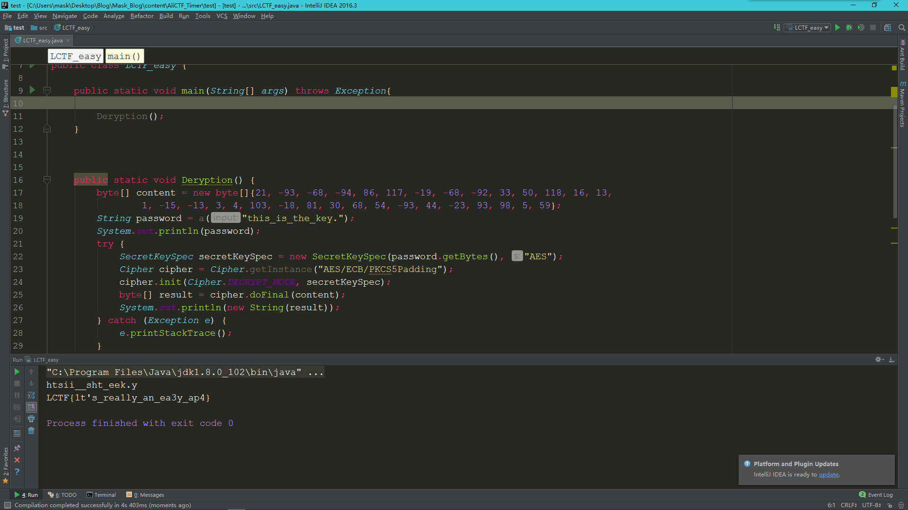

用jadx打开apk文件，为啥不用jeb呢，方便查看函数而已，jeb方便修改
package com.example.ring.myapplication;
import android.content.pm.ApplicationInfo;
import android.os.Bundle;
import android.support.v7.a.q;
import android.widget.Button;
import java.io.InputStream;
public class MainActivity extends q {
private String v;
protected void onCreate(Bundle bundle) {
super.onCreate(bundle);
setContentView((int) R.layout.activity_main);
ApplicationInfo applicationInfo = getApplicationInfo();
int i = applicationInfo.flags & 2; //进行“与”运算
applicationInfo.flags = i; //等价于applicationInfo.flags &= 2
if (i != 0) { //无论条件成不成立，后续操作相同
p();
((Button) findViewById(R.id.sureButton)).setOnClickListener(new d(this));
} else {
p();
((Button) findViewById(R.id.sureButton)).setOnClickListener(new d(this));
}
}
private void p() {
try {
InputStream open = getResources().getAssets().open("url.png"); //从assets文件夹下读取url.png
int available = open.available(); //返回在不堵塞情况下，一次读取到的数据长度
Object obj = new byte[available];
open.read(obj, 0, available);
Object obj2 = new byte[16];
System.arraycopy(obj, 144, obj2, 0, 16); //复制,obj源数组，144源数组起始位置，obj2目标数组，0起始位置，16长度
this.v = new String(obj2, "utf-8");
} catch (Exception e) {
e.printStackTrace();
}
}
private boolean a(String str, String str2) {
return new c().a(str, str2).equals(new String(new byte[]{(byte) 21, (byte) -93, (byte) -68, (byte) -94, (byte) 86, (byte) 117, (byte) -19, (byte) -68, (byte) -92, (byte) 33, (byte) 50, (byte) 118, (byte) 16, (byte) 13, (byte) 1, (byte) -15, (byte) -13, (byte) 3, (byte) 4, (byte) 103, (byte) -18, (byte) 81, (byte) 30, (byte) 68, (byte) 54, (byte) -93, (byte) 44, (byte) -23, (byte) 93, (byte) 98, (byte) 5, (byte) 59}));
}
}
那么下面继续跟进d类：
package com.example.ring.myapplication;
import android.view.View;
import android.view.View.OnClickListener;
import android.widget.EditText;
import android.widget.TextView;
import android.widget.Toast;
class d implements OnClickListener {
final /* synthetic */ MainActivity a;
d(MainActivity mainActivity) {
this.a = mainActivity; //初始化
}
public void onClick(View view) {
if (this.a.a(this.a.v, ((EditText) this.a.findViewById(R.id.passCode)).getText().toString())) {
TextView textView = (TextView) this.a.findViewById(R.id.textView);
Toast.makeText(this.a.getApplicationContext(), "Congratulations!", 1).show(); //那么这是正确分支
textView.setText(R.string.nice);
return;
}
Toast.makeText(this.a.getApplicationContext(), "Oh no.", 1).show();
}
}
关键代码：
if (mainActivity.a(mainActivity.v, ((EditText) mainActivity.findViewById(R.id.passCode)).getText().toString()))
那么先求出mainActivity.v的值：
新建一个项目，将url.png拷贝到src目录下
import java.io.File;
import java.io.FileInputStream;
/**
* Created by mask on 2017/3/27.
*/
public class LCTF_easy {
public static void main(String[] args) throws Exception{
p();
}
public static void p() {
try {
File file = new File(".\\src\\url.png");
FileInputStream inputStream_url_png = new FileInputStream(file);
int url_png_length = inputStream_url_png.available();
byte[] url_png_byte = new byte[url_png_length];
inputStream_url_png.read(url_png_byte, 0, url_png_length);
byte[] v0_2 = new byte[16];
System.arraycopy(url_png_byte, 144, v0_2, 0, 16);
String string_url_png = new String(v0_2, "utf-8");
System.out.println(string_url_png);
}
catch(Exception v0) {
v0.printStackTrace();
}
}
}
那么v的值就是this_is_the_key.
第二个参数，就是我们要输入的东东，然后我们把这两个参数传入到mainActivity.a()函数
private boolean a(String str, String str2) {
return new c().a(str, str2).equals(new String(new byte[]{(byte) 21, (byte) -93, (byte) -68, (byte) -94, (byte) 86, (byte) 117, (byte) -19, (byte) -68, (byte) -92, (byte) 33, (byte) 50, (byte) 118, (byte) 16, (byte) 13, (byte) 1, (byte) -15, (byte) -13, (byte) 3, (byte) 4, (byte) 103, (byte) -18, (byte) 81, (byte) 30, (byte) 68, (byte) 54, (byte) -93, (byte) 44, (byte) -23, (byte) 93, (byte) 98, (byte) 5, (byte) 59}));
}
下面跟进c类查看：
package com.example.ring.myapplication;
import java.io.UnsupportedEncodingException;
public class c {
public String a(String str, String str2) {
String a = a(str); //将str初始化，即将this_is_the_key.进行初始化
String str3 = "";
a aVar = new a(); //新建一个a类
aVar.a(a.getBytes());
try {
return new String(aVar.b(str2.getBytes()), "utf-8");
} catch (Exception e) {
e.printStackTrace();
return str3;
}
}
private String a(String str) {
try {
str.getBytes("utf-8");
StringBuilder stringBuilder = new StringBuilder();
for (int i = 0; i < str.length(); i += 2) {
stringBuilder.append(str.charAt(i + 1));
stringBuilder.append(str.charAt(i));
}
return stringBuilder.toString();
} catch (UnsupportedEncodingException e) {
e.printStackTrace();
return null;
}
}
}
跟进a类进行查看：
package com.example.ring.myapplication;
import java.io.UnsupportedEncodingException;
import java.security.MessageDigest;
import java.security.NoSuchAlgorithmException;
import javax.crypto.Cipher;
import javax.crypto.NoSuchPaddingException;
import javax.crypto.spec.SecretKeySpec;
public class a {
private SecretKeySpec a;
private Cipher b;
protected void a(byte[] bArr) {
if (bArr == null) { //是否有盐，盐为空
try {
this.a = new SecretKeySpec(MessageDigest.getInstance("MD5").digest("".getBytes("utf-8")), "AES");
this.b = Cipher.getInstance("AES/ECB/PKCS5Padding");
return;
} catch (UnsupportedEncodingException e) {
e.printStackTrace();
return;
} catch (NoSuchAlgorithmException e2) {
e2.printStackTrace();
return;
} catch (NoSuchPaddingException e3) {
e3.printStackTrace();
return;
}
}
this.a = new SecretKeySpec(bArr, "AES"); //盐不为空，则传入
this.b = Cipher.getInstance("AES/ECB/PKCS5Padding");
}
protected byte[] b(byte[] bArr) {
this.b.init(1, this.a);
return this.b.doFinal(bArr);
}
}
可以发现这是一个加密类， 那么顺序大致理清楚了，开始写脚本：
public static void main(String[] args) throws Exception{
Deryption();
}
public static void Deryption() {
byte[] content = new byte[]{21, -93, -68, -94, 86, 117, -19, -68, -92, 33, 50, 118, 16, 13,
1, -15, -13, 3, 4, 103, -18, 81, 30, 68, 54, -93, 44, -23, 93, 98, 5, 59};
String password = a("this_is_the_key.");
System.out.println(password);
try {
SecretKeySpec secretKeySpec = new SecretKeySpec(password.getBytes(), "AES");
Cipher cipher = Cipher.getInstance("AES/ECB/PKCS5Padding");
cipher.init(Cipher.DECRYPT_MODE, secretKeySpec);
byte[] result = cipher.doFinal(content);
System.out.println(new String(result));
} catch (Exception e) {
e.printStackTrace();
}
}
public static String a(String input) {
String result;
try {
input.getBytes("utf-8");
StringBuilder stringBuilder = new StringBuilder();
int i;
for(i = 0; i < input.length(); i += 2) {
stringBuilder.append(input.charAt(i + 1));
stringBuilder.append(input.charAt(i));
}
result = stringBuilder.toString();
}
catch(Exception e) {
e.printStackTrace();
result = null;
}
return result;
}
